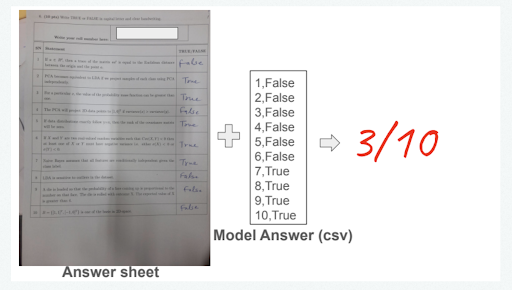
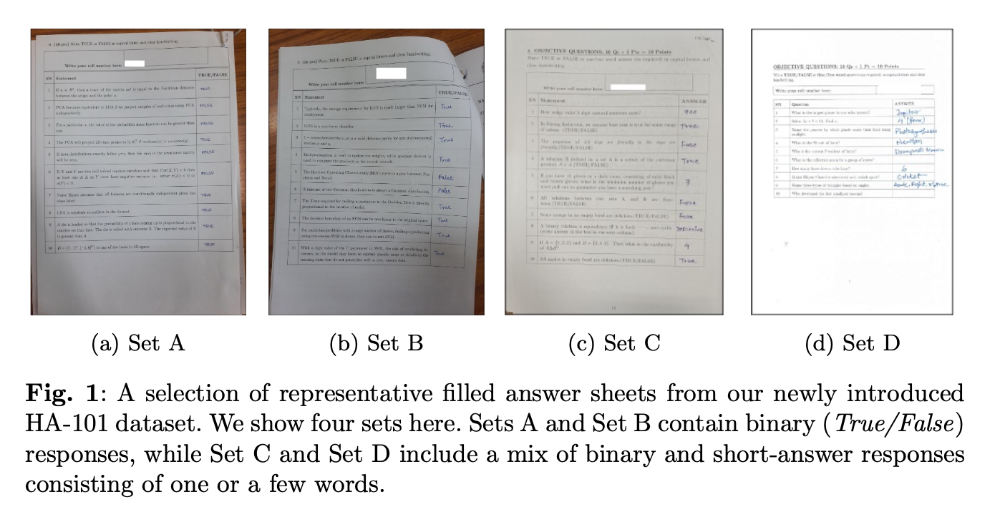
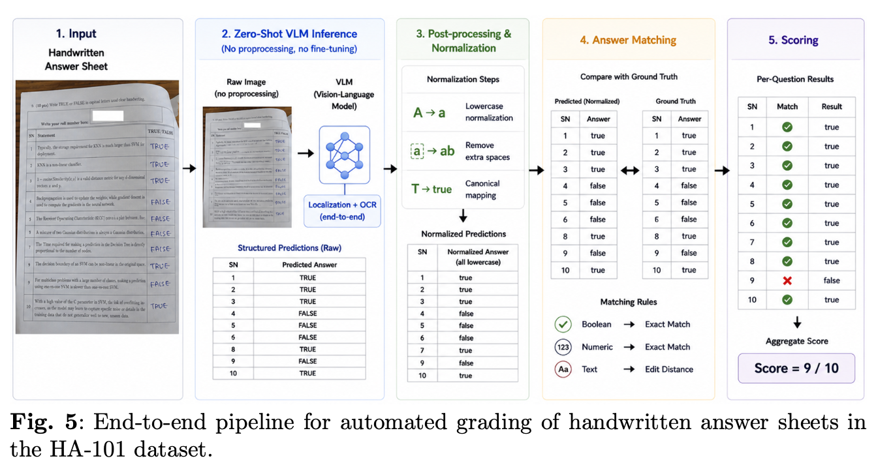
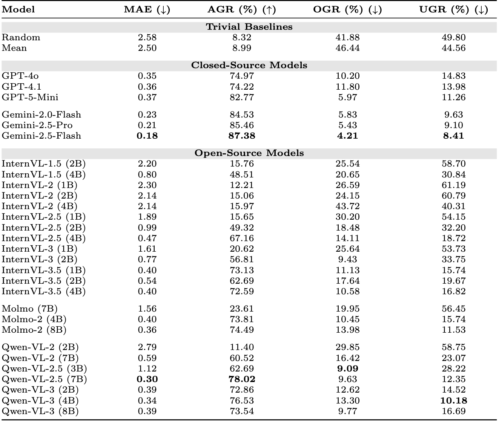

Problem Statement
In academic settings, students are often required to write their examination responses by hand, while examiners manually evaluate each answer sheet – a process that is time-consuming, labor-intensive, and difficult to scale. Although automated grading research has made significant progress, reliable end-to-end automated grading for real-world examinations, particularly for handwritten answers, remains an unsolved challenge. This naturally raises the question of how well current AI models perform on this task.

Dataset
To fill this gap in the literature, we introduce the Handwritten Assessment (HA) - 101 Dataset a curated benchmark in a controlled setting designed to capture real-world variations in handwritten student responses. The dataset consists of scanned answer sheets from structured examinations, where students write their answers on printed question-cum-answer sheets. The Handwritten Assessment-101 Dataset comprises 745 answer sheet images collected from four different set of question papers and written by ~375 students.

Data Collection Pipeline

Methodology
We formulate automatic grading as an end-to-end multimodal inference problem. We propose a hierarchical structured prompting strategy composed of the following six progressively increasing levels of guidance: Task Description, Layout-aware Grounding, Image Robustness Instructions, Answer-type Constraints, Output Schema Enforcements, and In-context Examples. To address reliability concerns, we propose a selective human-in-the-loop grading framework based on multi-model agreement.

AutoEval Web Application
AutoEval is a secure, user-friendly web platform designed for the seamless, end-to-end automated evaluation of handwritten answer sheets. Educators can effortlessly upload model answer keys alongside student submissions to initiate AI-driven grading workflows, completely abstracting the underlying complexity of Vision-Language Models.
The system provides real-time progress updates and a comprehensive interactive dashboard upon completion. Users can analyze summary statistics, review detailed student-wise scores, inspect question-level predictions on individual answer sheets, and export complete class reports.
Results
Using commercial Closed-Source Models: Among the closed-source models, the Gemini series achieves the best performance, with Gemini-2.5-Flash attaining the lowest MAE of 0.18 and the highest AGR of 87.38%. Baseline using Open Source VLMs: we observe that among the evaluated three open-source VLM families, Qwen-VL 2.5(7B) achieves the best performance, with an MAE of 0.30 and exact agreement with human scores on 78.02% of the answer sheets.
